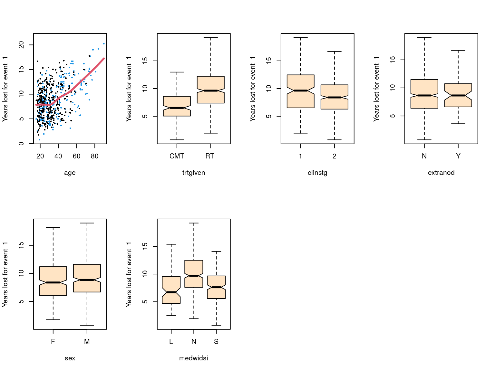

Other methods
Karla Monterrubio-Gómez, Nathan Constantine-Cooke, and Catalina Vallejos
2023-07-25
Dataset
In order to demonstrate the methods, we employ publicly available data.
The dataset used here corresponds to the Hodgkin’s disease (HD) study described in Pintilie (2006). The dataset comprises 865 patients diagnosed with early stage (I or II) HD, and which were treated either with radiation (RT) or with radiation and chemotherapy (CMT).
The recorded data includes:
- age: Age (years)
- sex: Sex, F=female and M=Male.
- trtgiven: Treatment given, RT=Radiation, CMT=Chemotherapy and radiation
- medwidsi: Size of mediastinum involvement, N=No, S=Small, L=Large
- extranod: Extranodal disease, Y=Extranodal disease, N= Nodal disease
- clinstg: Clinical stage, 1=Stage I, 2=Stage II
- time: time to failure (years) calculated from the date of diagnosis
- status: 0=censoring, 1=relapse and 2=death.
We now load and display the structure of the HD dataset:
library(readr)
hd <- data.frame(read_csv("../Data/HD/hd.csv",
col_types = cols(X1 = col_skip())))
str(hd)
#> 'data.frame': 865 obs. of 9 variables:
#> $ ...1 : num 1 2 3 4 5 6 7 8 9 10 ...
#> $ age : num 64 63 17 63 21 37 41 35 27 32 ...
#> $ sex : chr "F" "M" "M" "M" ...
#> $ trtgiven: chr "RT" "RT" "RT" "RT" ...
#> $ medwidsi: chr "N" "N" "N" "N" ...
#> $ extranod: chr "N" "N" "N" "N" ...
#> $ clinstg : num 1 1 2 2 2 1 2 2 2 2 ...
#> $ time : num 3.1 15.9 0.9 13.1 35.9 1.1 2.5 0.003 4.1 28.1 ...
#> $ status : num 2 2 1 2 0 1 1 1 1 0 ...To proceed with the analysis, it is important to change the data type of sex, trtgiven, medwidsi, and extranod from character to factor. Similarly, we convert clinstg from numeric to factor.
hd$sex <- as.factor(hd$sex)
hd$trtgiven <- as.factor(hd$trtgiven)
hd$medwidsi <- as.factor(hd$medwidsi)
hd$extranod <- as.factor(hd$extranod)
hd$clinstg <- as.factor(hd$clinstg)Now, we explore the number of events for each event type:
require(pander)
pander::pander(table(hd$status))| 0 | 1 | 2 |
|---|---|---|
| 439 | 291 | 135 |
Thus, we have 439 censored patients, 291 with relapse, and 135 who
died. From now on, we assume that the event of interest is relapse,
i.e. status=1.
In order to create a test set, we use stratified sampling to partition our dataset into 80% for train and 20% for test.
library(splitstackshape)
set.seed(2022)
split_data <- stratified(hd, c("status"), 0.8, bothSets = TRUE)
hd_train <- split_data$SAMP1[,-1]
hd_test <- split_data$SAMP2[,-1]Now, we explore the number of observations per status in both train and test set:
pander::pander(table(hd_train$status))| 0 | 1 | 2 |
|---|---|---|
| 351 | 233 | 108 |
pander::pander(table(hd_test$status))| 0 | 1 | 2 |
|---|---|---|
| 88 | 58 | 27 |
Random survival forests
The authors of random survival forests provide an online vignette here
(Ishwaran et al. (2021)). The method can be fitted
using the randomForestSRC package. Below we showcase how to
do that.
First, in order to fit the model, both, the train and test sets should be converted to data.frames:
hd_train <- as.data.frame(hd_train)
hd_test <- as.data.frame(hd_test)As RSF permits, both, a cause-specific and a CIF formulation. The
user should first determine the type of analysis of interest, and pass
it on the argument splitrule in the fitter function
rfsrc(). When the objective is to do identify which
variables are informative for a cause-specific hazard analysis, focusing
on a specific cause of interest, we must set
splitrule="logrank". In contrast, if one is interested on
long term predictions, splitrule = "logrankCR" is more
appropriate, as it considers the CIF. Below, we will illustrate the use
of both splitting rules.
The argument cause should indicate the event type of
interest to be used when applying the splitting rule. As described in
the documentation of rfsrc(), cause can either
be specified as a single integer (cause = 1 if the first
event type is of interest; cause = 2 if the second event
type is of interest) or as a vector of non-negative weights associated
to each event type (e.g. cause = c(1,0) if the first event
type is of interest). If cause is not specified, the
default is for the splitting rule to use an average across all event
types.
Generalized log-rank splitting rule (logrank)
The model can be fit with the rfsrc() function in the
randomForestSRC package. In order to do so, one should
first create a survival time object with the Surv()
function. This object will be the response variable in our regression
model. As discussed above, we set splitrule="logrank" and
cause = c(1,0) to obtain a cause-specific analysis for
event type \(k=1\). In order to assess
variable importance, we set argument importance="permute".
Note that this can be computed after the model is fitted using the
vimp() function directly. Furthermore, we set
bootstrap = by.rootand samptype = "swr" to do bootstrapping
with replacement.
library(randomForestSRC)
#>
#> randomForestSRC 3.2.2
#>
#> Type rfsrc.news() to see new features, changes, and bug fixes.
#>
#>
#> Attaching package: 'randomForestSRC'
#> The following object is masked from 'package:stabs':
#>
#> subsample
#> The following object is masked from 'package:Hmisc':
#>
#> impute
rsf.lr <- rfsrc(Surv(time, status) ~ age + sex + trtgiven +
medwidsi + extranod + clinstg,
data = hd_train,
ntree = 100,
splitrule = "logrank",
cause = c(1,0), # to indicate that first event is of interest
bootstrap = "by.root",
samptype = "swr", # sampling with replacement.
importance = "random", # other choices available, e.g. permute
save.memory= TRUE, # useful for big datasets
seed = 100)Note that if missing values are present, it is possible to impute
them by setting the argument na.action=na.impute.
A summary of the fitted object is obtained with
print().
print(rsf.lr)
#> Sample size: 692
#> Number of events: 233, 108
#> Number of trees: 100
#> Forest terminal node size: 15
#> Average no. of terminal nodes: 47.97
#> No. of variables tried at each split: 3
#> Total no. of variables: 6
#> Resampling used to grow trees: swr
#> Resample size used to grow trees: 692
#> Analysis: RSF
#> Family: surv-CR
#> Splitting rule: logrank *random*
#> Number of random split points: 10
#> (OOB) Requested performance error: 0.43894869, 0.22820705We can obtain the fitted trees; for instance, a plot of the fifth fitted tree is shown:
plot(get.tree(rsf.lr, 5))Furthermore, we can visualize the results of the fitted model with
plot.competing.risk(). This command shows averaged
out-of-bag ensemble for: CS cumulative hazard, the CIF, and the
conditional probability, stratified by event type. In the plot below,
the event of interest is shown in black.
plot.competing.risk(rsf.lr)
The output of the rfsrc() is rich ans contains extensive
information about the model fit. For example, we can obtain both,
out-of-bag, estimates of the cause-specific cumulative hazard function
(see rsf.lr$chf.oob) and the CIF (see
rsf.lr$cif.oob) for each event type. These estimates are
provided at the unique observed event times (see
rsf.lr$time.interest).
In addition, we can visualize marginal effects for each variable in
terms of specific quantities of interest. For example, in terms of the
cumulative hazard function of the event of interest (indicated below
through target) at a given time point
(e.g. time = 5 years below).
plot.variable(rsf.lr, target = 1,
time = 5,
surv.type = "chf",
sorted = TRUE)
In order to do variable selection, a variable importance measure for the event of interest is shown below. The higher the value, the better. Negative values indicate no predictive ability.
rsf.lr$importance[,1]
#> age sex trtgiven medwidsi extranod
#> 0.0235668361 0.0027958071 0.0188645005 -0.0005434887 -0.0027084406
#> clinstg
#> 0.0006262024In addition, one can also use minimal depth variable selection. In this case, the smaller the value, the more predictive ability. The second column of the table below shows the results:
var.mindepth <- var.select(rsf.lr,
cause = 1,
method = "md", # is possible to select "vh.vimp" for variable importance measure
conservative = "medium" # level of conservativeness of the thresholding rule
)
#> minimal depth variable selection ...
#>
#>
#> -----------------------------------------------------------
#> family : surv-CR
#> var. selection : Minimal Depth
#> conservativeness : medium
#> x-weighting used? : TRUE
#> dimension : 6
#> sample size : 692
#> ntree : 100
#> nsplit : 10
#> mtry : 3
#> nodesize : 15
#> refitted forest : FALSE
#> model size : 6
#> depth threshold : 5.3022
#> PE (true OOB) : 43.8949 22.8207
#>
#>
#> Top variables:
#> depth vimp.event.1 vimp.event.2
#> age 0.74 0.024 0.201
#> medwidsi 1.56 -0.001 0.008
#> trtgiven 1.68 0.019 -0.009
#> extranod 2.65 -0.003 -0.009
#> clinstg 2.77 0.001 -0.008
#> sex 2.99 0.003 0.006
#> -----------------------------------------------------------
pander::pander(var.mindepth$varselect)| depth | vimp.event.1 | vimp.event.2 | |
|---|---|---|---|
| age | 0.74 | 0.02357 | 0.201 |
| medwidsi | 1.56 | -0.0005435 | 0.007964 |
| trtgiven | 1.68 | 0.01886 | -0.00852 |
| extranod | 2.65 | -0.002708 | -0.008587 |
| clinstg | 2.77 | 0.0006262 | -0.007653 |
| sex | 2.99 | 0.002796 | 0.005913 |
Finally, whilst it is possible to obtain predictions for a test
dataset using the predict() function, we do not do this
here as splitrule = "logrankCR" is instead recommended when
the purpose of the analysis is to perform prediction.
Modified Gray’s test splitting rule (logrankCR)
In the code below, the settings of rfsrc() have been
specified in the same way as in the previous section (except for
splitrule). In particular, we use
cause = c(1,0) to indicate that the first event type is of
primary interest.
rsf.lrCR <- rfsrc(Surv(time, status) ~ age + sex + trtgiven +
medwidsi + extranod + clinstg,
data = hd_train,
ntree = 100,
splitrule = "logrankCR",
cause = c(1,0), # to indicate that first event is of interest
bootstrap = "by.root",
samptype = "swr", # sampling with replacement.
importance = "random", # other choices available, e.g. permute
save.memory= TRUE, # useful for big datasets
seed = 100
)
print(rsf.lrCR)
#> Sample size: 692
#> Number of events: 233, 108
#> Number of trees: 100
#> Forest terminal node size: 15
#> Average no. of terminal nodes: 48.37
#> No. of variables tried at each split: 3
#> Total no. of variables: 6
#> Resampling used to grow trees: swr
#> Resample size used to grow trees: 692
#> Analysis: RSF
#> Family: surv-CR
#> Splitting rule: logrankCR *random*
#> Number of random split points: 10
#> (OOB) Requested performance error: 0.44416446, 0.22447986As before fitted trees can be obtained with
get.tree.
plot(get.tree(rsf.lrCR, 5))Similarly, one can visualize the results of the fitted model with
plot.competing.risk(), which shows 3 plots: a CS cumulative
hazard, the CIF, and the conditional probability, stratified by event
type. In the plot below, the event of interest is shown in black.
plot.competing.risk(rsf.lrCR)
In addition, we can visualize marginal effects according to the expected number of years lost due to the event specific cause.
plot.variable(rsf.lrCR, target = 1,
surv.type = "years.lost",
sorted = TRUE)In order to do variable selection, as variable importance measure for the event of interest is shown below. The higher the value, the better. Negative values indicate no predictive ability.
rsf.lrCR$importance[,1]
#> age sex trtgiven medwidsi extranod
#> 0.0170858149 -0.0007612084 0.0110442457 -0.0045024446 -0.0033761305
#> clinstg
#> 0.0025128498In order to obtain predictions in the test set, we employ
predict() function as shown below. A summary of the object
is shown with the function print()
test.lrCR <- predict(rsf.lrCR,
newdata = hd_test,
importance = "permute" #VIM can also be obtained at this stage
)
print(test.lrCR)
#> Sample size of test (predict) data: 173
#> Number of grow trees: 100
#> Average no. of grow terminal nodes: 48.37
#> Total no. of grow variables: 6
#> Resampling used to grow trees: swr
#> Resample size used to grow trees: 692
#> Analysis: RSF
#> Family: surv-CR
#> Requested performance error: 0.38690476, 0.23518072The CIF for patient 1 and 2 in the test set is shown:
par(mar = c(4, 4, 2, 0.1))
plot(test.lrCR$time.interest,
test.lrCR$cif[1,,1],
type = "l",
col = "red",
ylim = c(0, 0.6),
xlab = "Time (years)",
ylab = "Cumulative incidence")
lines(test.lrCR$time.interest, test.lrCR$cif[2,,1], #CIF.hat[2,],
col="blue")
legend("topright", legend = c("Patient 1", "Patient 2"),
lty = c(1,1), col = c("red", "blue"))Predicted CIF at \(t=5\) for the first 5 subjects in the test set are shown:
test.lrCR$cif[1:5, test.lrCR$time.interest==5,1]
#> [1] 0.2471439 0.4264480 0.3513243 0.1933283 0.3215940A similar analysis can be performed using an average between both
event types as the target for the splitting rule. To do so,
cause can be left unspecified or be set to
cause = c(0.5, 0.5).
rsf.lrCR.av <- rfsrc(Surv(time, status) ~ age + sex + trtgiven +
medwidsi + extranod + clinstg,
data = hd_train,
ntree = 100,
splitrule = "logrankCR",
bootstrap = "by.root",
samptype = "swr", # sampling with replacement.
importance = "random", # other choices available, e.g. permute
save.memory= TRUE, # useful for big datasets
seed = 100
)
print(rsf.lrCR.av)
#> Sample size: 692
#> Number of events: 233, 108
#> Number of trees: 100
#> Forest terminal node size: 15
#> Average no. of terminal nodes: 49.21
#> No. of variables tried at each split: 3
#> Total no. of variables: 6
#> Resampling used to grow trees: swr
#> Resample size used to grow trees: 692
#> Analysis: RSF
#> Family: surv-CR
#> Splitting rule: logrankCR *random*
#> Number of random split points: 10
#> (OOB) Requested performance error: 0.43828167, 0.21863874Using this approach, predictions for the test dataset are obtained as follows:
test.lrCR.av <- predict(rsf.lrCR.av,
newdata = hd_test,
importance = "permute" #VIM can also be obtained at this stage
)
print(test.lrCR.av)
#> Sample size of test (predict) data: 173
#> Number of grow trees: 100
#> Average no. of grow terminal nodes: 49.21
#> Total no. of grow variables: 6
#> Resampling used to grow trees: swr
#> Resample size used to grow trees: 692
#> Analysis: RSF
#> Family: surv-CR
#> Requested performance error: 0.39114583, 0.24481928As before, here we visualise the CIF for the first two patients in the test set:
par(mar = c(4, 4, 2, 0.1))
plot(test.lrCR.av$time.interest,
test.lrCR.av$cif[1,,1],
type = "l",
col = "red",
ylim = c(0, 0.6),
xlab = "Time (years)",
ylab = "Cumulative incidence")
lines(test.lrCR.av$time.interest, test.lrCR.av$cif[2,,1], #CIF.hat[2,],
col="blue")
legend("topright", legend = c("Patient 1", "Patient 2"),
lty = c(1,1), col = c("red", "blue"))Finally, CIF estimates at \(t=5\) for the first 5 subjects in the test set are shown:
test.lrCR.av$cif[1:5, test.lrCR.av$time.interest==5,1]
#> [1] 0.2243883 0.4189461 0.2749960 0.1813040 0.3046402Storing predictions
In order to allow comparison with the predictions generated by other methods, we save the predictions obtained in this vignette.
pred_Others <- data.frame(
"testID" = seq_len(nrow(hd_test)),
"RF_logrankCR" = test.lrCR$cif[,test.lrCR$time.interest==5,1],
"RF_logrankCR.av" = test.lrCR.av$cif[,test.lrCR.av$time.interest==5,1])
if (file.exists("/.dockerenv")){ # running in docker
write.csv(pred_Others, "/Predictions/pred_Others.csv", row.names = FALSE)
} else {
write.csv(pred_Others, "../Predictions/pred_Others.csv", row.names = FALSE)
}References
Session Info
sessionInfo()
#> R version 4.3.1 (2023-06-16)
#> Platform: aarch64-unknown-linux-gnu (64-bit)
#> Running under: Ubuntu 22.04.2 LTS
#>
#> Matrix products: default
#> BLAS: /usr/lib/aarch64-linux-gnu/openblas-pthread/libblas.so.3
#> LAPACK: /usr/lib/aarch64-linux-gnu/openblas-pthread/libopenblasp-r0.3.20.so; LAPACK version 3.10.0
#>
#> locale:
#> [1] LC_CTYPE=en_US.UTF-8 LC_NUMERIC=C
#> [3] LC_TIME=en_US.UTF-8 LC_COLLATE=en_US.UTF-8
#> [5] LC_MONETARY=en_US.UTF-8 LC_MESSAGES=en_US.UTF-8
#> [7] LC_PAPER=en_US.UTF-8 LC_NAME=C
#> [9] LC_ADDRESS=C LC_TELEPHONE=C
#> [11] LC_MEASUREMENT=en_US.UTF-8 LC_IDENTIFICATION=C
#>
#> time zone: Etc/UTC
#> tzcode source: system (glibc)
#>
#> attached base packages:
#> [1] parallel stats graphics grDevices utils datasets methods
#> [8] base
#>
#> other attached packages:
#> [1] randomForestSRC_3.2.2 BART_2.9.4
#> [3] nlme_3.1-162 nnet_7.3-19
#> [5] mboost_2.9-7 stabs_0.6-4
#> [7] glmnet_4.1-7 Matrix_1.6-0
#> [9] pec_2023.04.12 rms_6.7-0
#> [11] Hmisc_5.1-0 coda_0.19-4
#> [13] DPWeibull_1.8 timereg_2.0.5
#> [15] pseudo_1.4.3 geepack_1.3.9
#> [17] KMsurv_0.1-5 riskRegression_2023.03.22
#> [19] prodlim_2023.03.31 cmprsk_2.2-11
#> [21] survival_3.5-5 splitstackshape_1.4.8
#> [23] pander_0.6.5 readr_2.1.4
#>
#> loaded via a namespace (and not attached):
#> [1] gridExtra_2.3 sandwich_3.0-2 rlang_1.1.1
#> [4] magrittr_2.0.3 multcomp_1.4-25 polspline_1.1.23
#> [7] compiler_4.3.1 vctrs_0.6.3 quadprog_1.5-8
#> [10] quantreg_5.95 stringr_1.5.0 shape_1.4.6
#> [13] pkgconfig_2.0.3 crayon_1.5.2 fastmap_1.1.1
#> [16] ellipsis_0.3.2 backports_1.4.1 inum_1.0-5
#> [19] utf8_1.2.3 rmarkdown_2.23 tzdb_0.4.0
#> [22] MatrixModels_0.5-2 purrr_1.0.1 bit_4.0.5
#> [25] xfun_0.39 cachem_1.0.8 jsonlite_1.8.7
#> [28] highr_0.10 data.tree_1.0.0 broom_1.0.5
#> [31] cluster_2.1.4 R6_2.5.1 RColorBrewer_1.1-3
#> [34] bslib_0.5.0 stringi_1.7.12 parallelly_1.36.0
#> [37] rpart_4.1.19 jquerylib_0.1.4 numDeriv_2016.8-1.1
#> [40] Rcpp_1.0.11 iterators_1.0.14 knitr_1.43
#> [43] future.apply_1.11.0 zoo_1.8-12 base64enc_0.1-3
#> [46] nnls_1.4 splines_4.3.1 tidyselect_1.2.0
#> [49] rstudioapi_0.15.0 yaml_2.3.7 partykit_1.2-20
#> [52] codetools_0.2-19 listenv_0.9.0 lattice_0.21-8
#> [55] tibble_3.2.1 withr_2.5.0 evaluate_0.21
#> [58] foreign_0.8-84 future_1.33.0 pillar_1.9.0
#> [61] DiagrammeR_1.0.10 checkmate_2.2.0 foreach_1.5.2
#> [64] stats4_4.3.1 generics_0.1.3 vroom_1.6.3
#> [67] hms_1.1.3 ggplot2_3.4.2 munsell_0.5.0
#> [70] scales_1.2.1 globals_0.16.2 binaryLogic_0.3.9
#> [73] glue_1.6.2 tools_4.3.1 data.table_1.14.8
#> [76] SparseM_1.81 visNetwork_2.1.2 mvtnorm_1.2-2
#> [79] grid_4.3.1 tidyr_1.3.0 libcoin_1.0-9
#> [82] truncdist_1.0-2 colorspace_2.1-0 htmlTable_2.4.1
#> [85] Formula_1.2-5 cli_3.6.1 evd_2.3-6.1
#> [88] fansi_1.0.4 lava_1.7.2.1 mets_1.3.2
#> [91] dplyr_1.1.2 gtable_0.3.3 sass_0.4.6
#> [94] digest_0.6.33 TH.data_1.1-2 htmlwidgets_1.6.2
#> [97] htmltools_0.5.5 lifecycle_1.0.3 bit64_4.0.5
#> [100] MASS_7.3-60